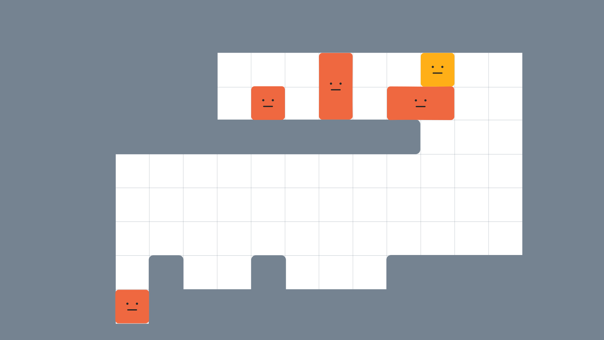
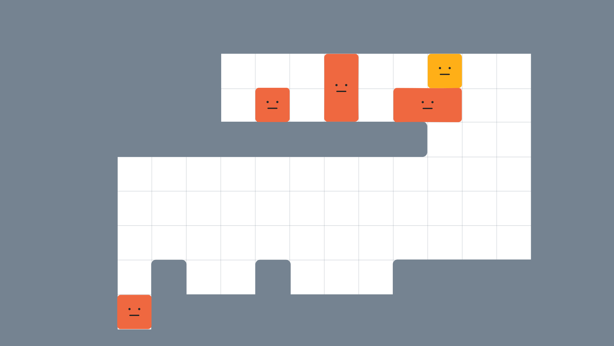

左端の １コは動けない。
うん。 だから上段の オレンジ をどんな形にして、穴を超えるか？ だね。
黄は自由に使えるよ。
close
最終形を考えてみよう。 左スミに オレンジを２段積むのは確定だね。
こっからどう伸ばす？ 上に伸ばすか、横に伸ばすか⋯⋯
穴を超えなきゃいけないから、ヒント： 接地面が広い方が、床の地形を活かせるよ。 １本足より２本足の方が、凸を拾ったり穴をまたいだりできる。
解答： 床に沿わせて コ の字にしてみよう。 左足／右足両方で、地形を活かせるようになるよ。
close
ひとまず最終形はこうとして、次はどうやってこの形を作るか、だね。
ヒント： １手目は「 黄を落とす」だよ。
解答： 1. 黄の上に横オレンジを乗せる 2. 右に寄せる 3. タテを落とし、左足をつくる 4. 左に寄せる 5. １コを落とし、右足をつくる
あとはをうまく足場に使って、コ の字を落とさないよう左端まで進めよう！
close